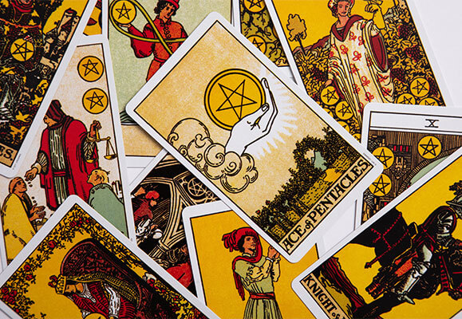
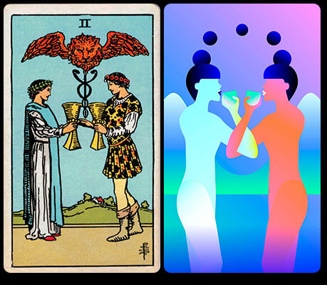

CONSULTA A NUESTROS EXPERTOS
APRENDIENDO EL SIGNIFICADO DE CADA CARTA DE TAROT
Redactor: Maggie Lob


Antes que nada me gustaría aclarar que esta entrada no es en sí de una forma muy técnica de aprender a leer cada significado de cada carta de nuestra baraja, sino más bien una serie de consejos que a mi en lo personal me han servido para poder aprenderlas de una manera más dinámica que estudiar cada una. Pero como siempre digo en mis videos de Youtube, en este camino todo es acerca de lo que a ustedes les haga sentir más cómodos y mejor dentro de su práctica, así que bueno, habiendo dicho eso, les platico de estos tips.
1. ¿Qué ves en la carta?
Este tip habla literalmente de que vemos en la carta, por ejemplo, en la imagen anterior vemos primero el As de Oros (Ace of Pentacles) y antes de buscar en nuestro libro guía qué es lo que significa dicha carta, vamos a tratar de analizar nosotros que es lo que nos quiere decir. Puede ser incluso creando una historia alrededor de lo que vemos en la imagen, es ahí donde viene nuestra intuición al leer nuestras cartas. Al finalizar este ejercicio, ahora si acude a tu librito guía y compara lo que tu leíste con lo que significa, y poco a poco verás como es más sencillo basarse en las imágenes.
Una parte importante es que la baraja que vemos en la imagen de arriba es una baraja bastante literal, y actualmente hay muchísimas cartas con imágenes mucho más conceptuales, así que si tu baraja no es la Raider Waite probablemente sea un poco más complicado encontrar una historia alrededor de lo que está sucediendo en la carta, pero de igual forma sirve que vayas entrenando a tus ojos a encontrar esos significados.
Aquí hacemos una comparación visual entre el 2 de Copas de la baraja
Raider Waite
Mystic Mondays
2. El viaje del loco
Lee en algún libro el “viaje del loco” (fool’s journey)que es una metáfora del camino de la vida en la que cada carta de los arcanos mayores representa una etapa de la misma. Esta es una manera en la que se vuelve más sencillo aprender los significados de cada carta del arcano mayor.
3. Separar las cartas por su categoría
En esta parte me refiero a que además de aprender que significa el 4 de Espadas en individual, aprendamos primero que representan las espadas, entonces yo lo dividiría de esta forma
- Significado de Espadas
- Significado de Copas
- Significado de Bastos
- Significado de Oros
Y ahora que tenemos esos como base luego procederíamos a aprender que significa cada número de las cartas:
- Los ases
- Cartas de en medio
- Los número 10
- Las cartas de la corte (Rey, Reyna, Caballero, Paje) en esta parte pueden variar los nombres dependiendo la baraja de tarot, pero el significado será el mismo.
4. Lecturas diarias, de una sola carta
Es importante leer y practicar lo más seguido posible cuando se está iniciando el aprendizaje, mi recomendación es leer una carta al día, como lectura personal para ustedes y así irse familiarizando con el significado de la carta + su intuición.
5. Leyendo a gente de confianza
Algo que a mi me ayudó mucho fue leer a mis conocidos que quisieran solo una carta, inicia por tiradas sencillas, ésta siendo “la carta del día” y pídeles opinión de que tan atinada sintieron tu lectura.
Después de este ejercicio puedes aumentar tanto el número de cartas para aprender a enlazar sus significados, o bien, que en vez de “carta del día” te pregunten algo que tu carta resuelva.
Como siempre, espero esta información les haya sido útil y si tienen alguna pregunta no duden en enviarme mensaje a cualquiera de mis redes sociales. ♥